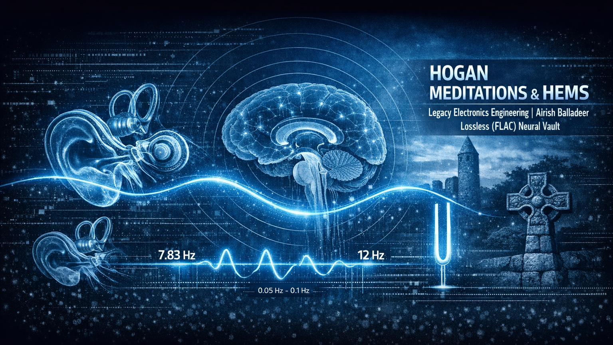

THE HAMMOCK EFFECT
Rock a Bye Baby
Exploring the Neurological Link Between Motion and Entrainment
In 2018, researchers at the University of Geneva confirmed what many have known instinctively for centuries: slow, rhythmic rocking lulls the brain into deep, restorative states. While the study focused on physical movement, it opened a vital door for H.E.M.S. engineering.
HEMS Neural Synchrony

Figure 1.0: Visual representation of Neural Synchrony with the HEMS engine.
The Discovery: Neural Synchrony
Scientists found that rocking induces a "synchrony" in brainwave activity. This motion activates sensitive neurons in the inner ear, which in turn modulates the brain’s intrinsic oscillations. In short, the body uses external movement as a metronome for internal rest.
FROM MOVEMENT TO SOUND
At the H.E.M.S. Laboratory, we apply this "Hammock Effect" through a process of Complex Panning Architecture. Sound is movement, when HEMS is used with headphones it actually moves the bones in your inner ear, this is even more effective than the "Rock a Bye Baby Effect". By precisely oscillating pink noise and environmental textures across the stereo field, we simulate the vestibular sensation of rocking directly within the inner ear.
The "Rolling Ball" Problem
The greatest challenge in meditation is the "Rolling Ball" effect—the tendency for the mind to either stay trapped in high-frequency Beta (stress) or tumble uncontrollably into Delta (sleep).
H.E.M.S. protocols act as a digital tether. By combining frequency offsets with subtle panning waves (ranging from 0.05 to 0.2 Hz), we "rock" the mind into a specific state—such as Theta—and hold it there. It is the difference between falling down a hill and resting in a swinging hammock.
THE ARCHITECTURE OF ROCKING
A Statement on Generative Synthesis
We’ve all felt it the Rock a Bye Baby Effect, the way a rocking chair or a swinging hammock bypasses the "Beta-state" noise of the world and drops us into a deep, natural calm.
Recent studies from the University of Geneva have confirmed that rhythmic "rocking" isn't just for infants. It induces a powerful neural synchrony in adults, modulating brain activity to consolidate memory and deepen sleep.
The Engineering Secret: In the H.E.M.S. Vault, we don't just use sound; we use Movement. By architecting complex "Panning Waves" (0.05Hz to 0.2Hz) across the stereo field, we physically "rock" the inner ear’s motion-sensitive neurons.
It is the digital equivalent of a hammock for your mind holding you in that perfect "Theta" state without letting you tumble into sleep.
Director's Note: As entrainment takes hold, the physical sensation of "panning" often vanishes. This is the hallmark of success—the moment where the brain’s internal rhythm matches the digital architecture of the track.
Our Free Release
Universal Theta Slide (50 Min)
12Hz Alpha to 5Hz Deep Theta v1.0.0
Our flagship 50-minute HEMS session is now available. This is a pure engineering file designed for deep neural transition, provided in 24-bit Lossless FLAC to preserve frequency offsets.
References: Current Biology (S0960-9822), University of Geneva.